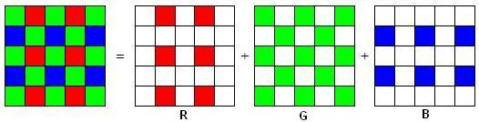

Color Demosaicing
ACKNOWLEDGMENT
This research project is done at HKUST under the supervision of Prof. Oscar Au.This research was supported by the Hong Kong Government Innovation and Technology Fund and the State Key Laboratory on Advanced Displays and Optoelectronics Technologies (Project No: ITC-PSKL12EG02).
INTRODUCTION
Digital Color Images are usually represented by three color values at each pixel. To completely measure the image, it is desirable to have three charge-coupled devices (CCD) to capture red (R), green (G), and blue (B) components which is a costly approach. Thus to reduce the production cost many cameras use a single sensor covered with a color filter array (CFA). The CFA allows only one color to be measured at each pixel. The most popular design used to achieve this is the Bayer pattern shown in Fig. . Thus two missing color elements at each pixel must be estimated from the adjacent pixels. This process is called CFA interpolation or demosaicing.
 PUBLICATION
Sunil Prasad Jaiswal, Oscar C. Au, Vinit Jakhetiya, Yuan Yuan, Haiyan YANG, "Exploitation of Inter-color correlation for Color Image Demosaicing," Proc. of IEEE Int. Conf. on Image Processing (ICIP), 27-30 Oct. 2014, Paris, France. [paper], [ICIP Poster].
DOWNLOAD
• Source code of the project can be found here. • Image dataset : Kodak , McMaster . • [paper], [ICIP Poster]. REFRENCES
[1] B.Gunturk, J. Glotzbach, Y. Altunbasak, R.schafer, and R. Mersereau, “Demosaicing: Color filter array interpolation,”. in IEEE Signal Processing Magazine, vol. 22, no. 1, Jan 2005. [2] X. Li, B. Gunturk, and L. Zhang, “Image demosaicing: A systematic survey,”. in proc. SPIE, vol. 6822, p. 68221J, 2008. [3] B. K. Gunturk, Y. Altunbasak, and R. M. Mersereau, “Color plane interpolation using alternating projection,”. in IEEE Trans. On Image Processing, Vol. 11, No. 9, 2002. [4] L. Zhang and X. Wu, “Color demosaicking via directional linear minimum mean square-error estimation,” in IEEE Trans. On Image Processing, Vol. 14, No. 12, 2005. [5] D. Paliy, V. Katkovnik, R. Bilcu, S. Alenius, and K. Egiazarain, “Spatially adaptive color filter array interpoaltion for noiseless and noisy data,” in Int. Journal of Imaging Systems and Technology, vol. 17, no. 3, pp 105- 122, 2007. [6] W. Tang, O.C. Au; X. Wen; Y. Yang; L. Fang “LMMSE frequency merging for demosaicking,” in ICME 2009. IEEE International Conference on , pp.229,232, June 2009. [7] A. Buades, B. Coll, J. -M. Morel, and C. Sbert, “Selfsimilarity driven color demosaicking,” in IEEE Trans. Image Processing, Vol. 18, No. 6, 2009. [8] L. Zhang, X. Wu, A. Buades, and X. Li, “Color demosaicking by local directional interpolation and nonlocal adaptive thresholding,” in Journal of Electronic imaging, Vol. 20, No. 2, 2011. [9] D. Kiku, Y. Monno, M. Tanaka and M. Okutomi, “Residual interpolation for color image demosaicking ,” in IEEE Int. Conf. on Image Processing (ICIP), Sept., 2013. [10] J. S. Ho, O.C. Au, J. Zhou, Y. Guo, “Inter-channel demosaicking traces for digital image forensics,” in ICME 2010. IEEE International Conference on , pp. 1475-1480, July 2010.